Source: Dr. Amir workshop — Med workshop 2 - 2026 / CLASS 3 OPHTHALMOLOGY (Aug 2026 drop) · Specialty: ophthalmology
Originally a physical-examination station, now also delivered as history taking. The pivotal concept is separating the two types of diplopia:
On examination, with both eyes open and diplopia present, cover one eye and then the other. If diplopia persists with one eye covered, it is uniocular (e.g. cataract in that eye). If diplopia disappears whenever either eye is covered, it is binocular (an ocular-movement problem). In a history-only station, ask the patient directly: does the double vision improve when you cover or close either eye? A scripted answer (e.g. "it gets better when I cover my right eye but not my left") is used to convey the finding.
Monocular diplopia (one eye): astigmatism, refractive error, cataract, keratoconus, lens problems.
Binocular diplopia (movement problem) - localise along the pathway:
Systems review: diabetes (retinopathy, cranial neuropathy, maculopathy), vascular disease and hypertension, neurological symptoms, muscle weakness and fatigue (myasthenia gravis), and facial/head trauma.
Localising rule of thumb: vertical image separation points to CN III (and CN IV); horizontal separation points to CN VI.
Introduce yourself and gain consent. Explore onset/timing (myasthenia gravis is typically intermittent and worse at the end of the day), progression, and the cover question (better when either eye is covered = binocular). Clarify diplopia vs blurring; image separation (vertical/horizontal); gaze that worsens it; distance vs near; and alleviating factors (rest, end-of-day worsening, specific head positions).
Then screen eyelid and eye questions (swelling, discharge, itch, photophobia, floaters, pain on movement, redness). Most exam cases are binocular (movement) problems.
If extra time - monocular screening: cataract (haloes around lights, faded colours), glaucoma (peripheral visual-field loss - e.g. bumping into people, turning the head to read road signs), macular degeneration (central field loss - difficulty seeing a face, wavy lines on an Amsler grid). Finish with past medical and family history (SADMA).
The patient reports diplopia that improves on covering either eye (binocular). She is on metformin, non-compliant, and not attending follow-up; urine shows 3+ glucose. The physical-examination card (when provided) documents diplopia worse in one gaze that improves on covering an eye, i.e. binocular, with signs of a sixth-nerve palsy. Diagnosis: binocular diplopia due to diabetic cranial (microvascular) neuropathy.
Explanation to patient: binocular diplopia is a movement problem of both eyes; in her case high blood sugar has damaged the nerves supplying the eye muscles. Reasons: the cover test (double vision improves when either eye is covered - a movement problem), known poorly controlled diabetes with 3+ glucosuria, and non-adherence to treatment. Differentials offered: brain tumour, multiple sclerosis, head trauma, stroke, myasthenia gravis, muscle/orbital problems (blow-out fracture), thyroid eye disease, and monocular causes (cataract, astigmatism, refractive error).
A newer version reportedly combines tremor, diplopia and a gait problem; diplopia recurs frequently in the exam.
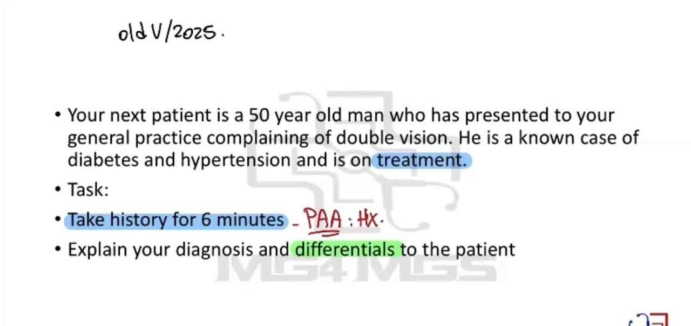
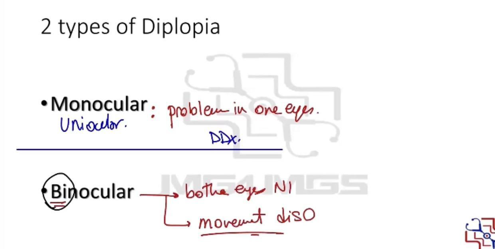
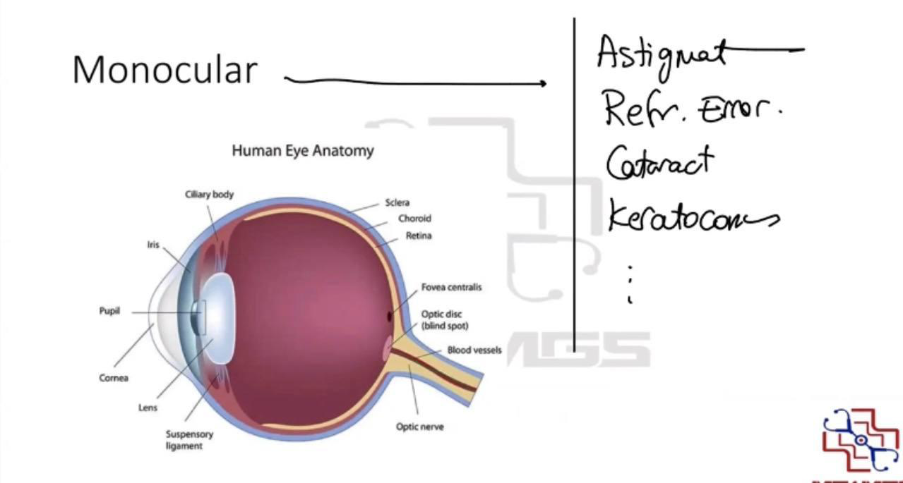
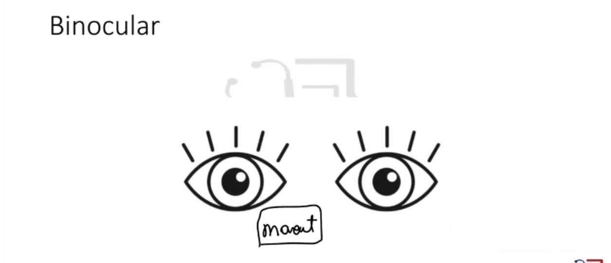
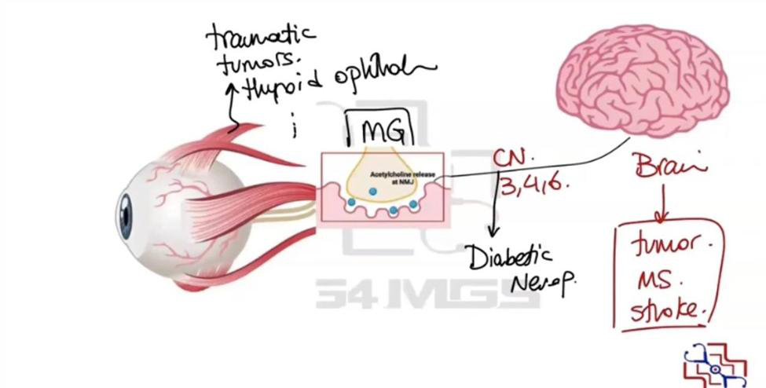
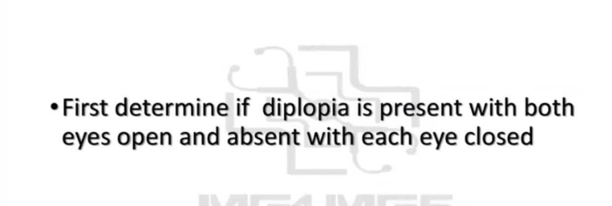
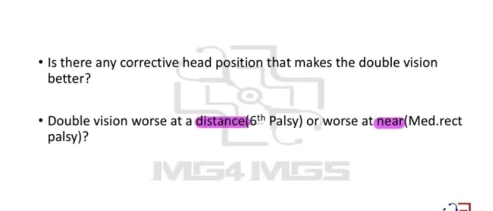
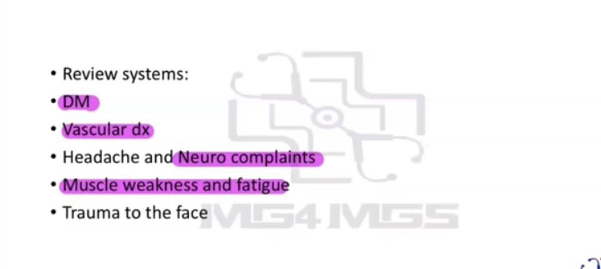
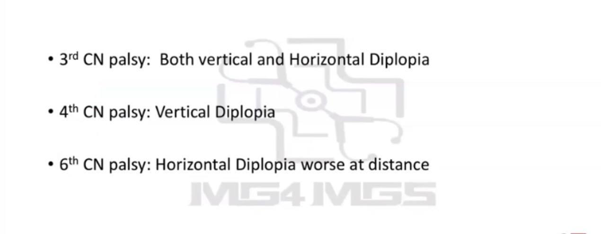
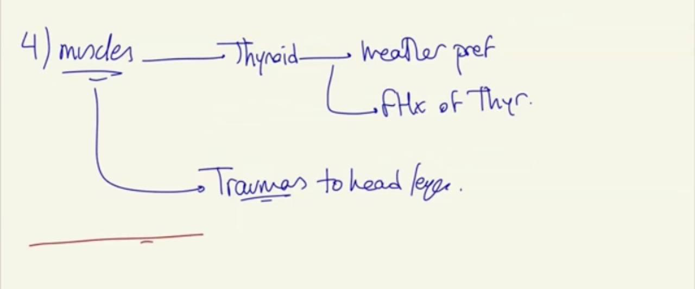
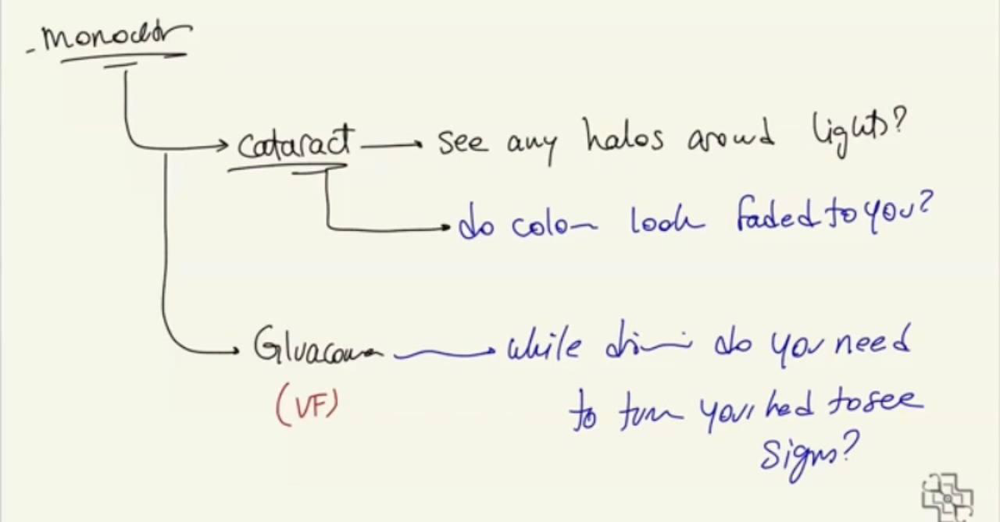
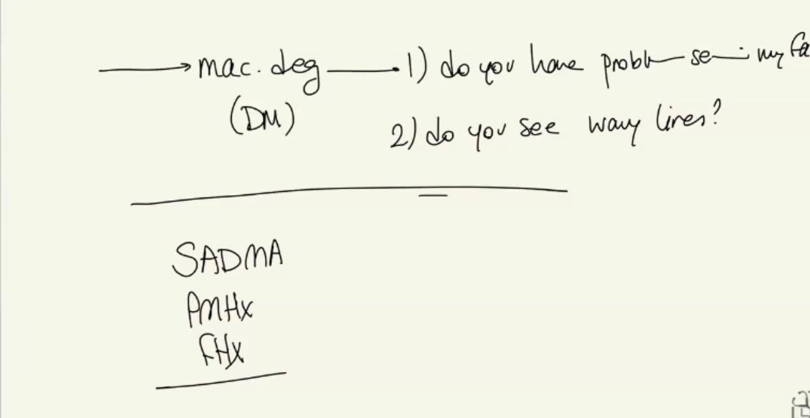
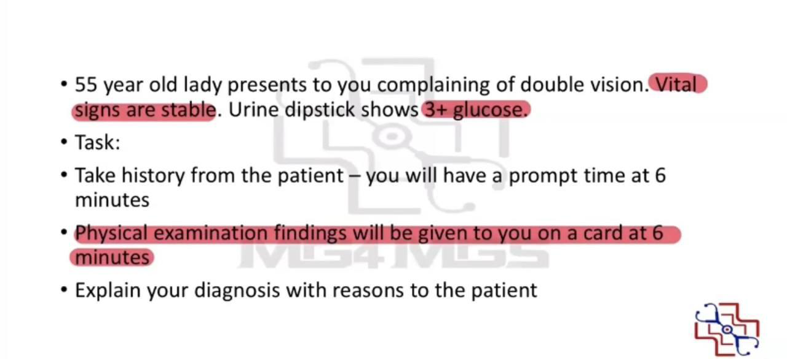
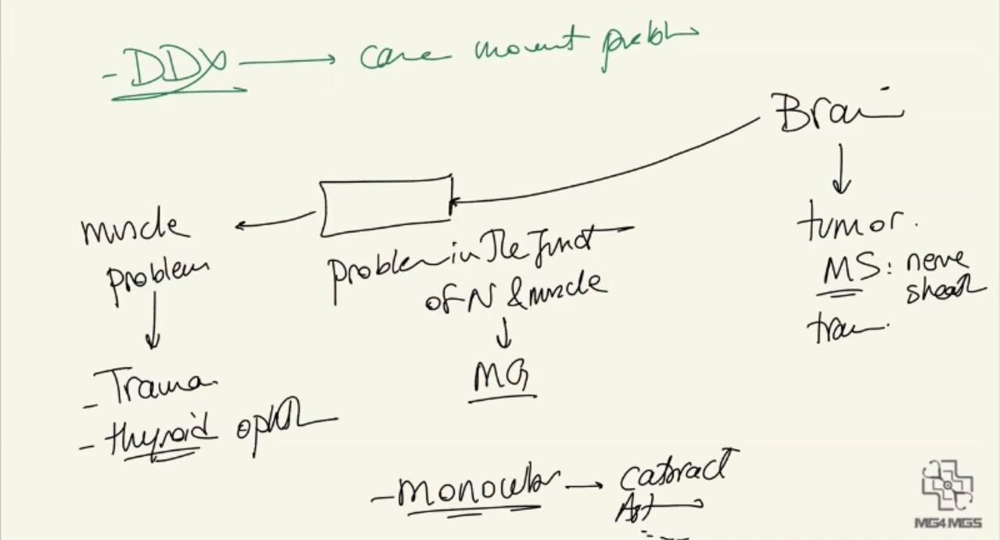
Reviewed by: physical-examination-expert (Australian clinical educator, ophthalmology focus) · fact-checked against the irStudy medical textbook RAG index.